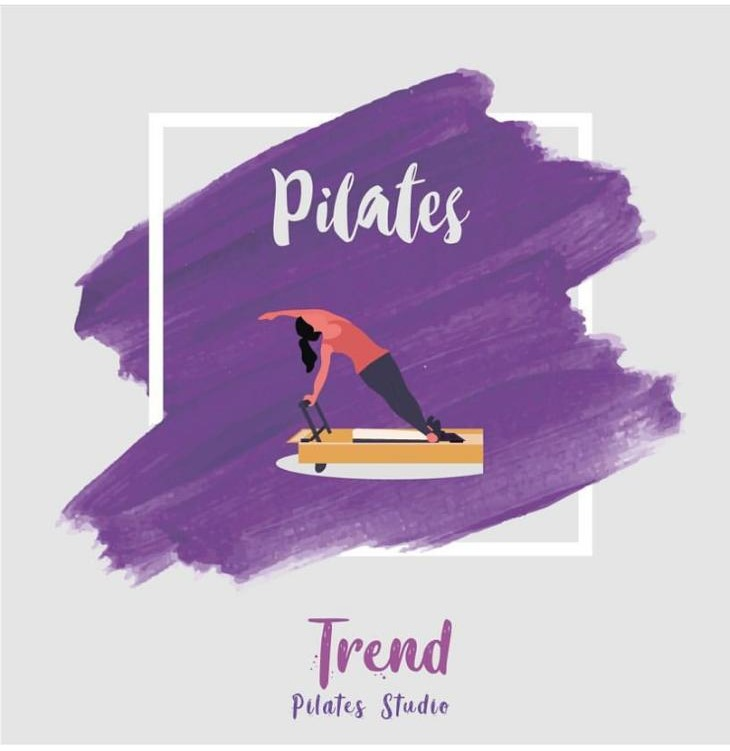

PİLATES
-
Ana Sayfa
Pilates
Fonksiyonel
Hakkımızda
Pilates nedir?
Pilates, yirminci yüzyılın başlarında Joseph Hubertus Pilates (1880-1967) tarafından geliştirilmiş fiziksel fitness sistemidir.
Pilates metodunun zihnin kaslar üzerindeki kullanımını desteklediği için contrology (kontrol bilimi) olarak adlandırdı. Pilates, bedenin dengeli tutulmasına yardımcı olan ve omurgayı desteklemekte önemli işlevi olan temel kaslar üzerine yoğunlaşılan bir egzersiz programıdır. Nefes egzersizi teknikleri de yer almaktadır.
